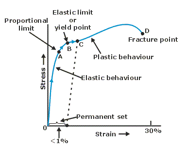

Physics of Solids¶
All solids are made up of atoms and molecules but due to their different internal arrangement of the molecules inside them, they have different classes:
Crystalline Solids¶
The solids in which the atoms are arranged in definite, regular and long range order are said to be crystalline.
Example¶
Quartz, mica, sugar, copper sulphate, sodium chloride etc.
Properties¶
- They have long range symmetry, regular arrangement is extended over a large volume of the crystal.
- They possess uniform chemical composition.
- The physical properties like thermal conductivity, electrical conductivity, compressibility, refractive index etc, have different values in different directions.
- They have flat surface.
Amorphous Solids¶
The solids in which the atoms are arranged in indefinite, irregular and short range order are said to be amorphous.
Example¶
Glass, rubber, sulphur etc.
Properties¶
- The distribution of atoms or molecules in these solids is random.
- They are isotropic, ie. they have same physical properties in all directions.
- Amorphous solids do not have sharp melting points.
- They have no characteristic geometrical shape.
Polymorphic Solids¶
Polymorphic may be said to be more or less solid material with a structure that is intermediate between order and disorder. They can be classified as partially or poorly crystalline solids.
Example¶
Polythene, Polystyrene, nylon etc.
Properties¶
- Polymers form a large group of naturally occurring and synthetic materials.
- Polymers consist wholly or in part of chemical combinations of carbon with oxygen, hydrogen, nitrogen and other metallic or non-metallic elements.
- Plastic and synthetic rubbers are termed 'Polymers' because they are formed by polymerization reactions in which relatively simple molecules are chemically combined into massive long chain molecules or 3D structures.
Crystal Lattice¶
A crystal structure is a periodic arrangement of points in space and is obtained by associating with every lattice point a unit assembly or basis of atoms, identical in composition, arrangement and orientation.
Elasticity¶
- Elasticity: When external forces are applied on a body, which is not free to move, there is a change in its length, volume or shape. When these forces are removed, the body tends to regain its original shape and size.
- Deforming Force: The external force acting on a body on account of which its size or shape or both changes is defined as the deforming force.
- Perfectly Elastic Body: If a body completely recovers its original shape and size, it is called, perfectly elastic. Example is quartz.
- Plastic Body: The body which does not have the property of opposing the external deforming force, is known as a plastic body.
The bodies which remain in deformed state ever after removal of the deforming forces are defined as a plastic body. Wet clay is example of plastic body.
Note
Actually no body is perfectly elastic or perfectly plastic. All bodies behaves in between two limits. We may consider quartz as almost perfectly elastic and putty or wet clay as almost perfectly plastic.
Stress¶
- The internal restoring force acting per unit are of a deformed body is called stress.
- Since in equilibrium, the magnitude of the external force is equal to the restoring force stress in equilibrium is measured by the external force per unit area.
- If a force \(F\) is applied on area \(A\), in equilibrium stress \(=F/A\).
- The stress developed in a body depends upon the way in which external force is applied on the body.
- Unit of stress in \(Nm^{-2}\) and its dimension is \(ML^{-1}T^{-2}\)
- Depending upon, how the external forces are applied on a body, the stress is of three types:
Longitudinal Stress¶
- When the stress is normal to the surface of the body, then it is known as longitudinal stress.
- This type of stress is produced due to deformation in length or volume of the body.
- Longitudinal stress is of two types
- Tensile stress
- Compression stress.
- The longitudinal stress produced due to increase in length or volume of a body is defined as tensile strength.
- The longitudinal stress, produced due to decrease in length or volume of a body, is defined as compression stress.
Volume Stress¶
- If equal normal forces are applied on every surface of a body. then it undergoes change in volume. The force opposing this change in volume per unit area of cross-section is defined as volumes stress.
- It is numerically equal to the applied external force per unit area of cross-section and acts outwards.
Shear Stress¶
- When the stress is tangential or parallel to the surface of the body then it is known as shear stress.
- Due to this stress the shape of the body changes or it get twisted.
Strain¶
When deforming forces are applied on a body it undergoes a change in shape or size. The fractional (or relative) change in shape or size is called the strain. That is, $$ \text{Strain}=\frac{\text{Change in dimension}}{\text{Original dimension}} $$
- The form of strain depends upon the directions of applied force.
- Strain is ratio, hence it has no unit and no dimension.
- Depending upon the way the deforming forces are applied on a body, strain is of three types.
Longitudinal (linear) strain¶
- It is the ratio of change in length (\(\Delta l\)) to the original length (\(l\)). $$ \text{Strain}=\frac{\text{Change in length}}{\text{Its original length}} $$
Volume strain¶
- It is the ratio of the change in volume (\(\Delta V\)) to the original volume $$ \text{Volume strain}= \frac{\Delta V}{V}$$
Shearing strain¶
- The angular deformation (\(\theta\)) in radians is called shearing strain. Since 0 is small we may write, $$ \text{Shear strain} = \theta = \tan \theta = \frac{\Delta x}{L}$$
Types of Modulus of Elasticity¶
| Young's Modules \(Y\) | Bulk Modulus \(K\) | Shear Modulus \(\eta\) |
|---|---|---|
| The ratio of longitudinal stress to the linear strain is called Young's Modulus \(Y\) | The ratio of normal stress to the volume strain is called bulk modulus \(K\) | The ratio of the shearing stress to the shearing strain is called the modulus of rigidity \(\eta\) |
| $$ Y=\frac{\text{Linear stress}}{\text{Longitudinal strain}} $$$$ Y=\frac{FL}{A\Delta L}=\frac{mgL}{\pi r^2\Delta L} $$ | $$ K=\frac{\text{Volume stress}}{\text{Volume strain}} $$ $$ K=\frac{FV}{A\Delta V} $$ | $$ \eta=\frac{\text{Shear stress}}{\text{shear strain}} $$ $$ \eta=\frac{F/A}{\theta}=\frac{F}{A\theta} $$ |
| Young's modulus of elasticity is numerically equal to that force which when applied on the wire of the unit cross-section, doubles its length. | For gases bulk modulus is of two types
|
The concept of shear applies only to solids. The reason is that shear forces are required to deform a solid and the solid tends to return to its shear forces are removed. |
| \(Y\) is the characteristic property of solid materials only. | The value of \(K\) is maximum for solids and minimum for gases. | Shear modulus does not apply on gases and liquid because gases and liquid do not have a definite shape to return to after deformation. |
Hooke's Law¶
- Within the elastic limits, the stress setup within an elastic body is proportional to the which the body is subjected by the applied external force i.e. $$ \frac{\text{Stress}} {\text{Strain}} =E $$ \(E\) is called modulus of elasticity.
- The value of \(E\) depends upon the material of body and not on the values of stress and strain.
- The value of \(E\), for the same material, are different for different types of strains.
- The value of \(E\) depends upon the type of stress and strain produced rather than their values.
- Unit of modulus of elasticity is \(Nm^2\) or pascal.
- Its dimensional formula is \([ML^{-1}T^{-2}]\)
Elastic Limit & Yield Strength¶
- When stress is increased continuously, a point A is reached at which the strain increases more, this point is called elastic limit.

- Beyond elastic limit the material does not return to its original condition when the deforming force is removed. It acquires what is called permanent set.
- On stressing a point B, is reached at which the material continues to strain without increase in load i.e. the wire begins to flow down the in spite of the same constant load. This point is called yield point.
- After large strain. It reaches the breaking point D occurs in the material is called breaking stress or fracture stress.
Strain Energy in Different Bodies¶
In any type of strain, the work done per unit volume i.e. potential energy or the strain energy per unit volume.
Energy Bands Theory¶
A solid can be treated as a densely packed obtained by bringing together isolated single atoms. An isolated single atom possesses a number of discrete energy levels that can be occupied by electrons of the atom. Generally the electrons exist in the ground state, when excited electrons can shift to higher energy levels. Usually only the valence electrons can participate in these excitations.
- An energy state, which cannot be occupied, is forbidden gap.
- The band formed by a series of energy levels containing, the valence electrons is known as valence band. The valence band may be partially or completely filled up depending upon the nature of the crystal.
- The next higher permitted band is called as the conduction band. This band may be empty or partially filled. In conduction band the electrons can move freely.
- Metals have positive temperature coefficient (\(\alpha_t\)) of resistance while semiconductors have negative (\(\alpha_t\)).
Electrical Classification of Solids¶
All solids employed in electrical work may be classified into following three groups:
- Conductors
- Insulators
- Semiconductors
| Conductors | Insulators | Semiconductors |
|---|---|---|
| In the case of a conductor, there will be no forbidden energy gap. The conduction and valence energy bands overlap each other. Obviously, the electrons from the valence band can freely enter the conduction energy band. | In case of an insulators, the forbidden energy band is very wide and hence an electron cannot jump across, from the valence energy band to the conduction energy band. Only when a very large amount of energy is supplied, an electron may be able to jumps across the forbidden band. This explains why certain materials which are perfect insulators behave as conductors only at very high temperatures. In case of diamond, the forbidden energy gap is nearly \(6eV\). | In the case of semiconductors, the forbidden energy band is comparatively small. For example \(0.7eV\) for (\(Ge\)) and \(1.1eV\) for silicon. In these cases, when a small amount of energy is supplied, the electrons can easily jump across the forbidden energy band and reach the conduction energy band. |
| In conductors, charge carries responsible for the conduction of electricity are free electrons. | In insulators, no free electrons are available for conduction. | Semiconductors has a much smaller energy gap (\(E_g\)) between the top of the highest filled band (called valence band) and the bottom of the vacant band just above it called the conduction band. |
| The electrical conductivity of conductors is of the order of \(10^8\Omega m^{-1}\) | The electrical conductivity of insulators is very low in the range \(10^{-16}\) to \(10^{-6}\Omega m^{-1}\) | The conductivity of semiconductors is of the order of \(1\Omega m^{-1}\) |
| Metallic conductors have positive temperature coefficient of resistance. | In insulators, the valence band is completely filled while conduction band is completely empty. | Semiconductors have negative temperature coefficient of resistance. |
| The resistance of conductor increases due to addition of impurities. | Ionic crystal are insulators. The other examples are glass, wood, paper, mica, diamond, ceramic, plastic etc. | The resistance of semiconductor decreases due to the addition of impurities. At absolute zero temperature, conduction band is completely behaves as an insulators. |
Type of Semiconductors¶
There are two types of semiconductors:
- N-type Semiconductor
- P-type Semiconductor
| N-type Semiconductor | P-type Semiconductor |
|---|---|
| When a small amount of Pentavalent Impurity (Examples: Phosphorus, antimony etc) is added to an intrinsic semiconductor, we obtain an N-type extrinsic semiconductor. | When a small amount or trivalent Impurities (Examples: gallium, Indium, boron, etc) is added to an intrinsic semiconductor, we obtain a P-type extrinsic semiconductor are called acceptor atoms, as they accept an electron from the host lattice. |
| In the N-type semiconductor, the number of electrons in the conduction band > number of holes in the valence band | In the P-type semiconductor, the number of holes in the valence band > number of electrons in the conduction band. |
| The impurities atoms in N-type extrinsic semiconductor are called donor atom as they donate as extra electrons to pure semiconductor or host lattice. | The impurities in P-type extrinsic semiconductor are called acceptor atoms, as they accept an electron from the host lattice |
| In the N-type semiconductor, electrons are called as majority charge carriers, whereas holes are called minority charge carriers. | In P-type semiconductor holes are majority charge carriers while electrons are minority charge carriers. |
| In N-type semiconductor, the Fermi level shift towards the conduction band. | There is no charge on P-type semiconductor also, because it is formed by the combination of free positive charged holes and fixed negatively charges acceptor ions. |
| There is no charge on N-type semiconductor because it is formed by the combination of free negatively charges electrons and fixed majority carrier. | There is no charge on P-type semiconductor also, because it is formed by the combination of free positively charged holes and fixed negatively charged acceptor. |
| The energy level of the hole can also be calculated approximately using Bohr model. |
| Diamagnetism | Paramagnetism | Feromagnetism |
|---|---|---|
| Diamagnetic substances are feebly repelled by the magnet. | Paramagnetic substances are feebly attracted by the magnet. | Ferromagnetic substances arc strongly attracted by the magnet. |
| Atoms do not have any permanent dipole moment. | Atoms have permanent dipole moments which are randomly oriented. | Atoms have permanent dipole moments which are organized in domains. |
| Magnetization is small, negative an varies linearly with field. | Magnetization is small, positive and varies linearly with field | Magnetization is very large, positive and varies non-linearly with field. |
| Susceptibility is small, negative and temperature independent. | Susceptibility is small, positive and varies inversely with temperature. | Susceptibility is very large, positive and temperature dependent. |
| Relative permeability is slightly greater than unity. | Relative Permeability is much greater than unity. | |
| This property is exhibited by solids, liquids and gases. | This property is exhibited by solids, liquids and gasses. | This property is exhibited by solids only that too crystalline. |
| It is practically independent of temperature. | It decreases with rise in temperature. | It decreases with rise in temperature and above curie temperature become paramagnetic. |
| \(Bl\), \(Cu\), \(Ag\), \(Hg\), \(Pb\), water hydrogen, \(He\), \(Ne\) etc are diamagnetic. | \(Na\), \(K\), \(Mg\), \(Mn\), \(Al\), \(Cr\), \(Sn\) and liquid oxygen are Paramagnetic. | \(Fe\), \(Cc\), \(Ni\) and their alloys are ferromagnetic. |
Super Conductors¶
- Temperature at which material losses its resistivity and becomes super conductor is called critical temperature.
- The first super conductor was discovered in 1911.
- Critical temperature of \(Al\) (\(T_e=1.18K\)), tin (\(I_e=3.72K\)), lead (\(T_e=7.2K\)) & Hg(\(T_e=4.2K\))
- Complex crystalline structure known as yttrium barium copper Oxide (\(YBa_2Cu_3O_7\)) is super conductor at \(163K\) i.e, at \(-110\degree C\).
- Any superconductor with a critical temperature above \(77 k\). the boiling point of liquid nitrogen, is referred as a high temperature superconductor.
Uses¶
- Magnetic resonance imaging (MRI)
- Magnetic Levitation trains
- Powerful but small electric motors
- Faster computer chips
- Concentrating \(U^{235}\) gas in centrifuge system.
Hysteresis Loop¶
Magnetic hysteresis¶
The value of flux density for any value of current is always greater when the current is decreasing, than when it is increasing i.e. magnetism lags behind the magnetizing current.
Saturation¶
The magnetic flux density increases from zero and reaches a maximum value. At this stage the material is said to be magnetically saturated.
Remanence or Retantivity¶
When the current is reduced to zero, the material still remains strongly magnetized. It is due to the tendency of domains to stay partly in line, once they have been aligned.
Coercivity¶
To demagnetize the material, the magnetizing current is reversed and increased to reduce the magnetization to zero; this is known as coercive current. * Once the material is magnetized. its magnetization curve never passes through the origin. * The Coercivity of steel is more than iron, so it requires more current to demagnetize.
Area of loop¶
- The area of Hysteresis loop is a measure of the energy needed to magnetize. and demagnetize the specimen during each cycle. This is the energy required to do work against internal friction of domains. This work is done against friction, is dissipated as heat. It is called Hysteresis loss.
- A material with high retentively and large coercive force, would he most suitable to make a permanent magnet.